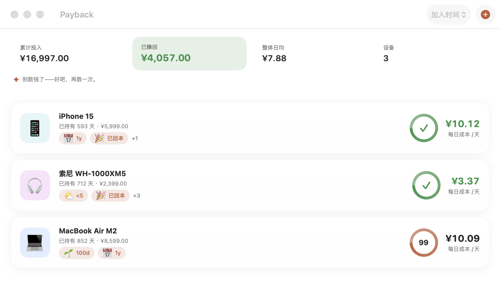
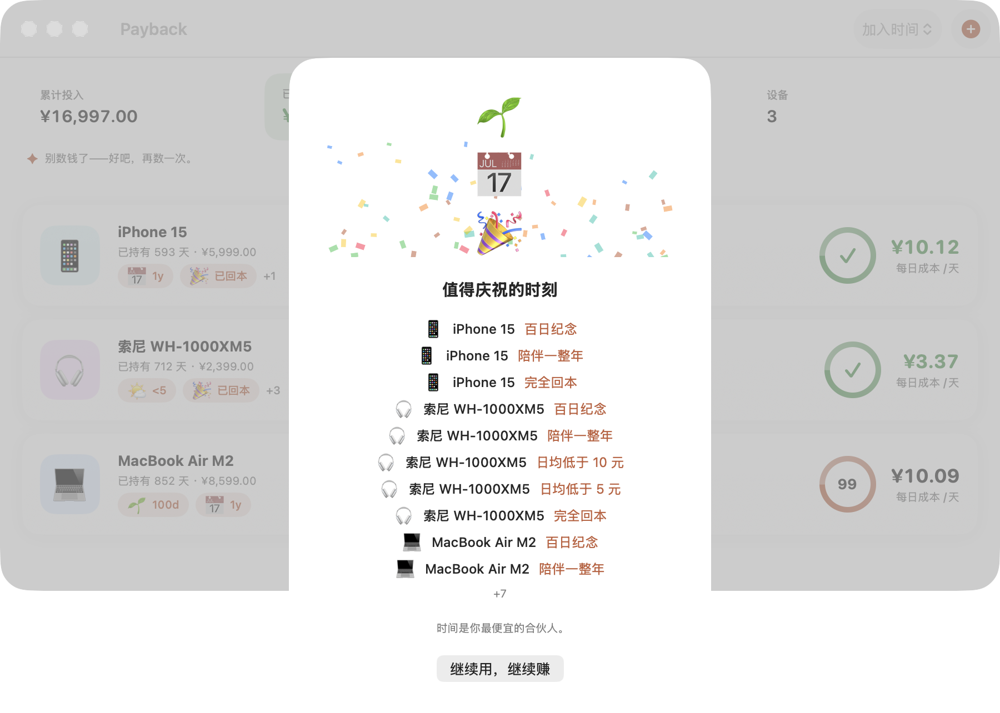

🚀五分钟上手
下载、打开、记一台设备。教程到这里就结束了——本页其余内容都是可选的。
- 安装。到 Releases 页下载最新版：macOS 把 DMG 里的应用拖进「应用程序」，Windows 双击 MSI 安装，Linux 用 deb / rpm / AppImage。首次启动若被拦（未公证构建）：右键 → 打开。
- 打开应用。顶部是总览：累计投入、已赚回、整体日均、设备数。中间是设备列表。没有账号，不用注册。
- 添加第一台设备。点右上角 ＋，填名称、价格、购买日期。十秒钟记完，保存。
- 看每日回本数字。列表里立刻出现「每日成本」：价格 ÷ 持有天数。明天再看，它又低了一点。
- （可选）设定心理价位。打开设备详情，开启「心理价位（每天）」，填一个每天愿意付的数。回本进度环开始工作。

截图为真实的 macOS 版本。Windows 与 Linux 布局相同，窗口边框随平台风格。
🧮每日成本与心理价位
每日成本 = 购买价格 ÷ 持有天数。购买当天算第 1 天。数字每天自动下降——时间开始为你工作。
心理价位回答另一个问题：这台设备一天值多少钱？设了它（详情页里的「心理价位（每天）」），就能看到三样东西：
- 回本进度：已持有天数 × 心理价位 ÷ 价格，进度环走到 100% 那天标记「已回本」。
- 预计回本：照今天的用法，还有几天走满。
- 已赚回：超出价格的价值。总览里的绿色数字只增不减。
| 示例 | 含义 |
|---|---|
¥2,399 的耳机，心理价位 ¥5/天 | 约 480 天回本；第 481 天起，每天都是赚的 |
¥5,999 的手机，用了 593 天 | 每日成本 ≈ ¥10.12，而且明天更低 |
🗂设备管理
- 添加：点右上角 ＋。填名称，选图标和分类，填价格与购买日期。货币默认跟随总账，可单台修改。
- 编辑：打开设备详情，改任意字段，保存即时生效。
- 排序：列表右上角菜单，按加入时间 / 日均成本 / 回本进度。
- 删除：详情里点删除，确认后删除。删除后无法恢复。
📉每日成本曲线
打开任一设备详情，下方是从买来到今天的成本曲线。曲线只会往下走，越平越接近回本。两端标注第 1 天和今天的每日成本。
🏅里程碑
百日纪念、陪伴一整年、日均低于 1 元、完全回本……达成当天打开应用，会看到一张庆祝卡片。点「继续用，继续赚」关掉，继续数钱。

📦数据与备份
全部数据是一个本地 JSON 文件，人可读、随手备份。备份 = 复制这个文件；恢复 = 放回原位。
| 平台 | 数据文件 |
|---|---|
| macOS | ~/Library/Application Support/Payback/payback.json |
| Windows | %APPDATA%\Payback\payback.json |
| Linux | $XDG_DATA_HOME/payback/payback.json |
导出：这个 JSON 文件本身就是完整导出——用任意编辑器打开、放进云盘、随带走。CSV 导出在 Pro 规划中。
写入是原子的：文件损坏时自动移到一旁（.corrupt-时间戳），应用重新开始，永不崩溃。
❓常见问题
不会。数据只存在本机 JSON 文件里：无账号、无服务器、无遥测。唯一的网络请求是检查更新（访问 GitHub Releases），可关（设置里关闭自动检查）。
不需要。装好就用，数据在你自己机器上。
macOS 14+（Apple Silicon / Intel）、Windows 10+（x64）。Linux 为实验性支持（deb / rpm / AppImage）。
应用内可切换中文 / English（默认跟随系统）；深浅色外观跟随系统设置。
菜单栏「检查更新…」，或等自动检查（每 4 小时一次）。更新走 Ed25519 签名清单，下载后校验再安装，装完数据原样保留。
当前完全免费，免费版最多 10 台设备。Pro 版（自定义里程碑、CSV 导出、多账本、解除上限）规划中，商业路径公开可查。
删掉应用，再删数据文件夹（路径见「数据与备份」）。不留任何残留。